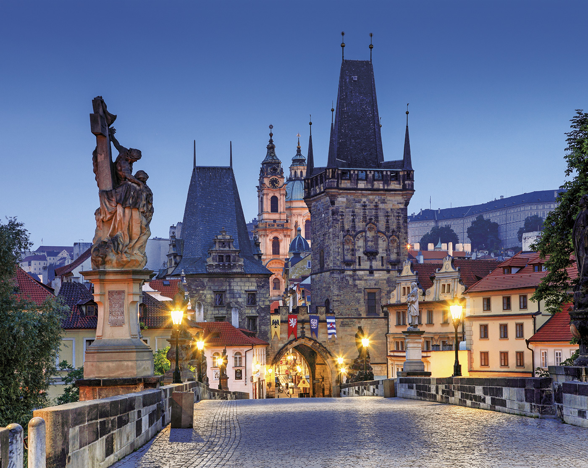
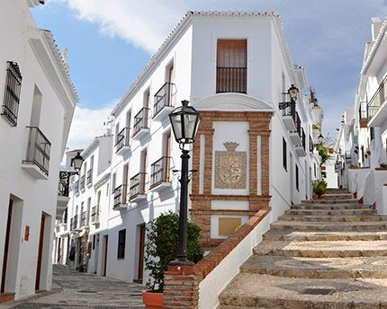

14 experiencias únicas para descubrir la República Checa
Volando Voy... Cuando el viajero aterriza en Chequia, cree encontrarse en un paisaje de cuento en el que las ciudades sorprenden por el color de sus fachadas y los pueblos se llenan de castillos y palacios de fábula. Por no hablar de sus sobrecogedores parajes naturales, con desfiladeros de casi 140 metros de profundidad y las reservas naturales por las que hacer senderismo a las puertas de Praga. La República Checa está esperándonos con un sinfín de experiencias inolvidables. En los alrededores de Praga, lo que se conoce como Bohemia Central, se encuentran algunos de los castillos y palacios más impresionantes de la región, , y lo que es mejor, existe la posibilidad de dormir en ellos. Ejemplo de ello son el Hotel Palacio Štiřín y el Chateau Liblice, dos lugares para marcarse una escapada de cuento e inolvidable
Seguir leyendo...Los 5 pueblos más bonitos de Málaga
Entre pueblos. Calles en pendiente cuyas casitas de fachada blanca se acuestan por la ladera de los montes definen la clásica imagen de estos pueblos malagueños. Pero hay mucho más por descubrir tras esta belleza radiante. Frigiliana es una de las aldeas más bonitas de La Axarquía. Cuenta con la iglesia de San Antonio, cuyo campanario es el alminar de una anterior mezquita. El Barribarto, su núcleo antiguo, invita a pasear por calles de paredes encaladas adornadas con tiestos de flores, mientras se descubren escalinatas, pasadizos y patios escondidos.El pueblo se aferra a un cerro donde se confunden los restos de un castillo erigido en el siglo IX. Tras recorrer las cuestas, se puede compensar el paseo en algún mesón del centro o del barrio nuevo, que sigue creciendo justo al lado.
Seguir leyendo...